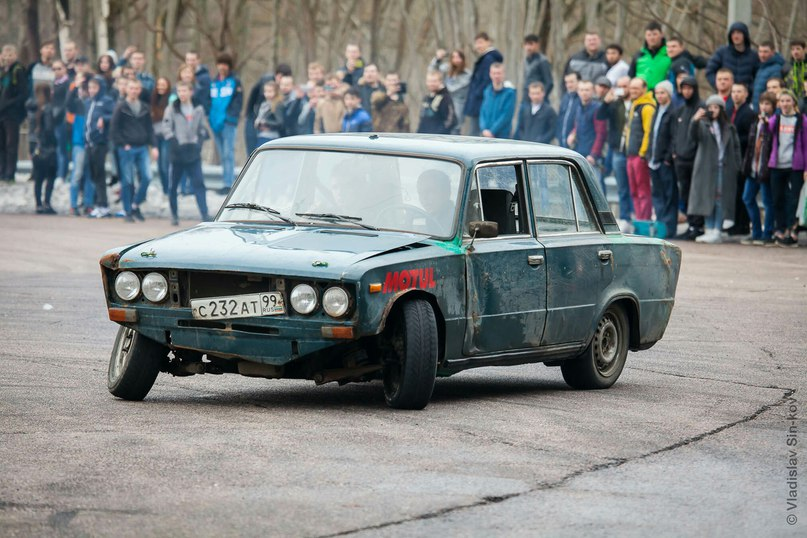
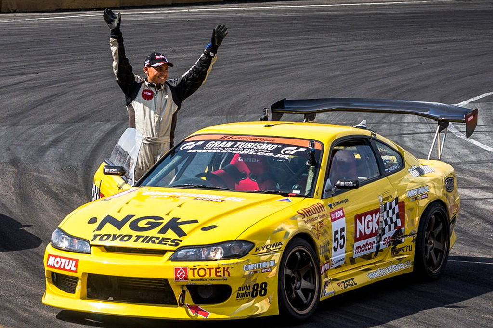
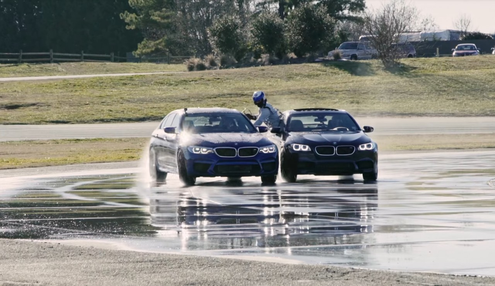
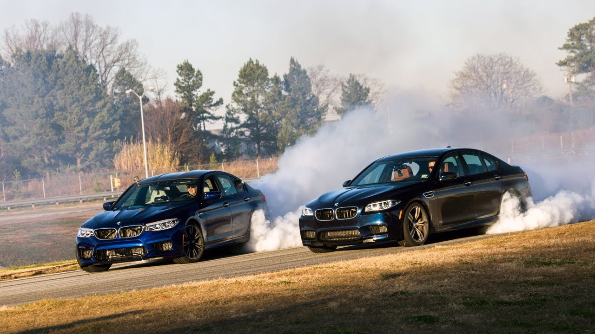
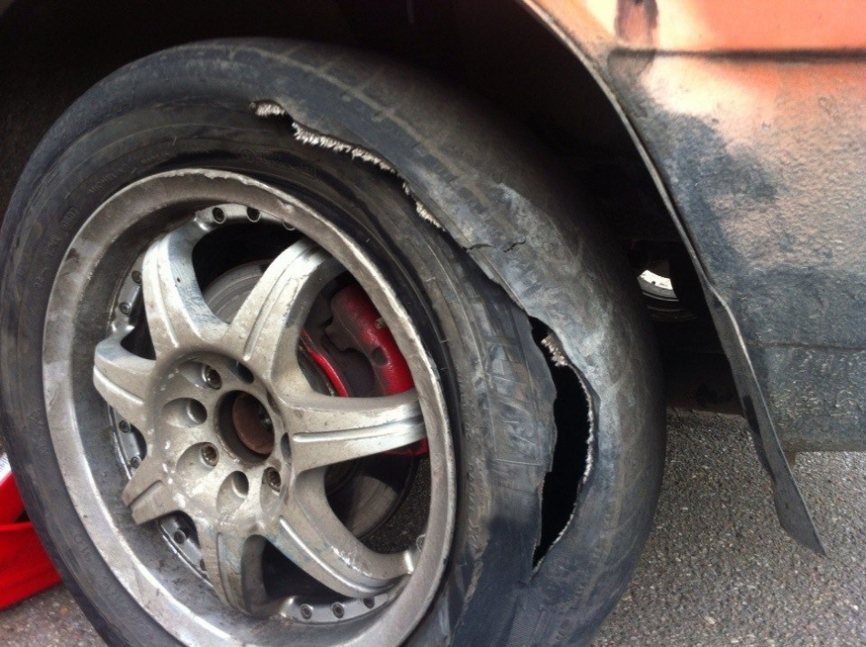
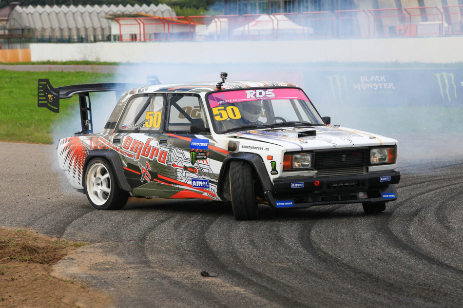

Сейчас все фанаты масл-каров испытают боль. Потому что этот проект ещё более богохульный, нежели Ford Mustang с RB26DETT из третьего «Форсажа».
Французский дрифтер Александре Клодин хотел ворваться в дрифт-тусовку на чём-то необычном. И не придумал ничего лучше, как построить корч на базе Dodge Charger 1968 года. То есть 5,3-метрового рамного купе, чья масса приближается к двум тоннам.
Старый карбюраторный V8 уступил место баварскому V8 S62B50, позаимствованному у BMW M5 E39. Для нового мотора пришлось заменить подрамник, и тут как нельзя лучше пришлась деталь... от Porsche Cayenne. Выхлопные трубы от двигателя вывели под лобовое стекло без каких-либо глушителей, так что орёт V8 будь здоров.
Над эстетикой машины тоже немного поработали, установив «лавочку» в стиле Dodge Charger Daytona. Вид имеет, как говорится.
Suzuki JimnyМалыш Jimny известен своими талантами на бездорожье, но для дрифта рамный короткобазный внедорожник слабо подходит. Тем не менее, японская фирма Kinokuni всё же решила рискнуть…
И построила инфернальное нечто, которое напоминает Suzuki Jimny. На самом деле от Jimny здесь только кузов, а сразу под ним располагается самодельный трубчатый каркас, к которому крепится подвеска от Nissan Silvia и форсированный четырёхцилиндровый двигатель от неё же (SR20DET), который развивает около 700 сил. То есть фактически это короткобазная Сильвия с очень необычной внешностью.
Ford TransitНа базе Транзита построено немало спорткаров: есть линейка Supervan, Transit на базе Jaguar XJ220, несколько дрэгстеров, раллийные модификации. Стоит ли удивляться, что существует и дрифтовая версия?
Сумасшедший вэн был создан в 2010 году, чтобы предоставлять услуги дрифт-такси. Изначально тюнеры планировали оснастить четырёхместный дрифт-кар двигателем Cosworth, но тот оказался недостаточно мощным для фургона. Поэтому пришлось использовать классику дрифта — пятилитровый V8 S62B50 от BMW M5. И, ко всеобщему удивлению, это сработало: Транзит стал отличным дрифт-мобилем!
Правда, из-за высокой температуры у машины периодически отказывают передние тормоза, но не беда: есть же задние!
Подразделение Ford Performance и тюнинговая компания RTR Vehicles представили гоночный электрокар Mustang Mach-E 1400. Созданный на базе будущего кроссовера Mustang Mach-E, этот автомобиль лишь немногим напоминает серийный оригинал.
Машина получила сразу семь электромоторов суммарной мощностью 1400 лошадиных сил, что и отражено в названии. Три двигателя расположены спереди и четыре сзади. Автомобиль можно настраивать таким образом, чтобы он ехал исключительно на переднем приводе, исключительно на заднем или же на полном приводе.
Кузов также изменен. Внешние панели заменены на пластиковые, а огромное заднее антикрыло создает на скорости 161 километр в час прижимную силу в одну тонну.
Автомобиль получил никель-магниево-кобальтовую батарею емкостью 56,8 киловатт-часов, что сравнимо с емкостью батарей болидов Формулы Е. Компания не раскрывает запас хода, однако более легким и менее мощным болидам таких батарей хватает на 100 километров в гоночном темпе.
Начнём издалека. Какая музыка популярна в настоящее время? Все значимые хит-парады и чарты переполнены хип-хопом. Зарубежные и отечественные исполнители вступают в коллаборации с рэперами: вспомните совместный трек Димы Маликова и АК-47. Таких примеров достаточно и на Западе. Почему так случилось? На этот вопрос точно ответил Слава КПСС в своём интервью, отметив, что успех хип-хопа заключается в его легкодоступности: каждый может купить микрофон и начать «делать рэп». Перейдем к автогонкам. Спросите любого человека на улице, что он об этом знает? В лучшем случае вам назовут Колина МакРея и 24-часа Лемана, в худшем: Формулу-1, Шумахера и то, что Камазы постоянно выигрывают ралли Париж-дакар. Но давайте будем честны, даже автолюбитям смотреть все это попросту НЕИНТЕРЕСНО. Зачем смотреть, как миллионеры гоняют по кругу на машинах за миллиарды, если камера выхватывает интересуюшего тебя пилота всего на 3% эфирного времени. Или ралли, где всё ещё хуже со зрительской точки зрения. Но это все вкусовщина, и в комментариях найдутся те, кто ответят на любой из моих аргументов. И самым главным из них будет: "Я ХОЧУ ТАК ЖЕ". Чтобы стать пилотом Формулы-1, в 99.9% случаев вы должны прийти в 10 лет в картинги двигаться по карьерной лестнице пилота. Примерно так же обстоит дело со многими видами автоспорта. Можно приводить различные исключения в виде Кена Блока и др., но давайте признаемся честно - это исключения из правил. А для того, чтобы начать путь дрифтера (Дрифт (англ. Drift) — техника прохождения поворотов и вид автоспорта, характеризующиеся использованием управляемого заноса на максимально возможных для удержания на трассе скорости и угла к траектории) достаточно купить "жигули", сделать доработки на пару десятков тысяч рублей и начать тренировки зимой (Старки правы - зима близко!). Вам не нужны специализированные трассы, штурман и знамомый, который засечёт время круга. Только жигули и площадка, где вы никому не будете мешать.
Но вдруг у вас нет прав и вы хотите быть обычным наблюдателем? Здесь тоже всё доступно: большинство пилотов активно ведут социальные сети, с ними легко начать общение как в пространстве сети, так и в живую.
Важно, что отечественная дрифт-сцена позволяет найти себе любимчика. Здесь вам и сошедщий с картин о 90-х Евгений Лосев, курьезные и непредсказуемые Шиков с Твардовским, спокойный и целеустремленный Георгий Чивчян, максимально эпичный Сергей Кабаргин,показательно агрессивный любитель ирландских бойцов UFC Борис Вербицкий и самая главная медийная звезда российской дрифт-сцены Аркадий Цареградцев. Наблюдать за тем, как эти ребята борются между собой, доставляет максимальное удовольствие. Каждый этап сопровождается огромным количеством аварий, технических проблем, но, самое главное, проездов высочайщего класса. Много ли за рубежом знают о российких ралли гонках или кольцевых? Безусловно, да, и результаты чемпионата мира 2017 года это подтверждают: 2 место Аркадий Цареградцев, 4 место Георгий Чивчян, а в 2018 году Георгий Чивчян стал обладателем Кубка Мира по Дрифту. Но понятие, что это "российская школа", ещё не сформировано.
Важно отметить, что почти все пилоты вкладывают немалое количество личных денег, чтобы ехать и показывать результат. Спонсорская история в нашей стране в данном виде спорта еще не развита.
Каков вывод? Дрифт становится рок-н-роллом автоспорта, как когда-то им были ралли времён борьбы субару против мицубиси и громких побед Колина Макрея. Дальше будет только лучше! Пилоты получат бОльшее финансирование, эта тема начнёт освещаться в СМИ, вокруг машин будет ещё больше красивых девушек, а на трибунах начнут появляться мужчины в строгих костюмах вместе со своими жёнами. Всё это будет означать постепенный закат дрифт-культуры, но пока что нас ждет только расцвет и ее яркая, завораживающая кульминация.
Очередной фестиваль FITMENT event собирает всех любителей стенса и дрифта. Гостей ждут 15 декабря в Vernissage by Flacon: организаторы пока не раскрывают подробности, но пообещали много нового! Мероприятие продлится до 22:00, а после церемонии награждения начнётся FITMENT party.
Кстати, совместно с ХАСКИ ХЭЛП организаторы проводят благотворительный день помощи для хаски и призывают каждого внести свою лепту: это могут быть корм, деньги, а также просто инициатива помочь в важном проекте (по желанию). Кроме того, пришедшие на фестиваль смогут бесплатно забрать любого понравившегося питомца к себе домой.
Сейчас продолжается приём заявок от тех, кто планирует стать участником FITMENT event 4, а также от тех, кто будет вести фото- и видеосъёмку события.
Организаторы напоминают, что на мероприятии необходимо соблюдать социальную дистанцию, и рекомендуют не забывать надевать маски и перчатки.
Переделанный под дрифт-машину катафалк привезли на выставку ритуальных услуг "Некрополь-Приморье — 2020", которая открылась 7 декабря в городе Артём. В пресс-службе выставки уточнили, что приспособить похоронный автомобиль для езды в экстремальных условиях решила ритуальная контора из Новосибирска.
Для этого машина Toyota Crown была занижена, ходовая часть заменена, объединены две трансмиссии. Модернизированный катафалк теперь может "поставиться боком" и в целом выполнять все манёвры, которые делают подготовленные для таких трюков автомобили.
Ожидается, что во время выставки технические возможности дрифт-катафалка продемонстрирует профессиональный пилот. После завершения мероприятия автомобиль вернётся в Новосибирск и будет задействован в работе, для которой предназначался изначально.
Компания BMW установила новый рекорд книги Гиннесса по непрерывному дрифту, который исполнял седан М5 нового поколения. Но самое необычное, что в ходе рекордного заезда автомобиль несколько раз дозаправляли на ходу.
Итог нового рекордного заезда на BMW M5 - 8 часов непрерывного дрифта и 372 км пройденной дистанции (прежний мировой рекорд - 143 км). При этом правила разрешали седану скользить по орошаемой водой поверхности трека, а также останавливаться для дозаправки.
Но в BMW решили, что это слишком скучно, поэтому от остановок на дозаправки отказались. Вместо этого применили авиационную схему с дозаправкой на ходу. В роли "танкера" выступила М5 прошлого поколения, в багажник которой установили дополнительный бензобак с автоматической системой пожаротушения. А на рекордный автомобиль поставили внешнюю топливную горловину системы быстрой дозаправки, вроде тех, что применяются в "Формуле-1".
BMW M5 заправляли через специально разработанную систему, которая способна перекачивать до 70 литров топлива менее чем за минуту.
Главная же сложность и опасность в том, что заправляющий "танкер" тоже ехал в дрифте вслед за рекордным автомобилем. При этом расстояние между двумя машинами составляло всего около полуметра. И в этих условиях каскадер высовывался из заднего окна и осуществляет дозаправку, в ходе которой за 50 секунд перекачивается до 70 литров топлива. Всего за время рекордного заезда машину дозаправляли пять раз. В процессе не обошлось и без легких столкновений, но на рекорд это не повлияло и все заправки прошли успешно.
Новый дрифт-рекорд поставил инструктор американской школы вождения BMW Йохан Шварц, который в 2013 году проехал в непрерывном дрифте 82 километра.
Четырёхцилиндровый оппозит Subaru EJ20 — это легендарный мотор, дебютировавший ещё в 1989 году на модели Legacy первого поколения. За три десятка лет силовой агрегат обзавёлся множеством модификаций. Как отмечает «Авторевю», двигатель ставили на многие автомобили марки и даже на легендарные «Субару Импрезы» для ралли.
Сейчас мотором EJ20 оснащается только одна модель — седан Subaru WRX STI для японского рынка (мощность силового агрегата составляет 308 л. с.) А весной следующего года эту машины снимут с производства, и история «ежа» на этом завершится.
По этому случаю японцы выпустят «прощальную» версию Subaru WRX STI EJ20 Final Edition. Такой автомобиль отличается памятной табличкой на двигателе, золотистыми колесами BBS и деталями декора. Тираж версии ограничен — 555 экземпляров..
Если вы твёрдо решили отдать свой автомобиль на закланье дрифт-культуре, нужно быть готовым к тому, что покрышки вы будете менять чаще, чем что-либо ещё в автомобиле. Скажем так: активный износ резины – это суть дрифта, её главный столп. Посмотрев любое видео по несложному запросу в YouTube, можно сразу же понять суть. Клубы дыма в каждом повороте недвусмысленно намекают на главную статью расходов.
Придется покупать спецшины. Здесь также очень важно понимать, что на гражданской резине дрифтовать вы будете очень недолго. Состав покрышки не рассчитан на такой высокий нагрев и трение, которым она подвергается при постоянных и продолжительных пробуксовках. Всё может закончиться очень быстро – банальным разрывом покрышки от перегрева. Выход – покупать специализированную дрифтинговую резину. Стоит она соответствующе. Ну а как вы хотели?
 Повышаются нагрузки на двигательВсё просто: дрифтовать – значит постоянно держать обороты где-то в районе отсечки. Отсюда логично следует, что мотор постоянно испытывает повышенные нагрузки. Масло с фильтром также придётся менять значительно чаще, причём лить какую-нибудь дешёвую минералку не получится – как раз наоборот. Необходимо, чтобы масло было максимально качественным, способным стойко переносить повышенные термические нагрузки.
Тяжко приходится сцеплениюЭффективный дрифт невозможен без умелой работы левой педалью. Поэтому фрикционные накладки всегда работают на грани проскальзывания, чем вызывается их кратный износ по сравнению с обычной эксплуатацией. И да – для более-менее регулярных упражнений с заносами будьте готовы не только часто менять сцепление, но и купить в итоге усиленное (разумеется, гораздо более дорогое).
 Подвеска, особенно сайлентблокиЗдесь можно возразить: а подвеска-то каким боком, ведь машина едет по ровному асфальту! По ровному, да. Вот только именно что боком. Все резинометаллические «суставы» рычагов и тяг подвески рассчитаны на обычное прямолинейное движение и работу на скручивание. Но никак не на поперечно-растягивающие нагрузки, возникающие при постоянном движении в заносе и перекладках руля.
Ручной тормоз, а именно, его тросики и тормозные колодкиПравильный дрифт предполагает постоянную «игру» стояночным тормозом в процессе заноса. Что очевидным образом сказывается на износе его элементов и расходных материалов в виде задних колодок.
Рулевому управлениюЕму жить в вечном «полёте» боком тоже несладко. Здесь аналогия с сайлентблоками подвески – тяги, наконечники и сама рулевая рейка просто не рассчитаны на тот вектор приложения нагрузок, который они испытывают в заносе. Кроме того, пилоту постоянно приходится резко перекладывать руль, что не добавляет здоровья и насосу гидроусилителя.